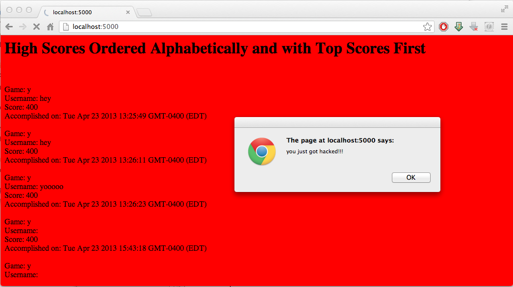
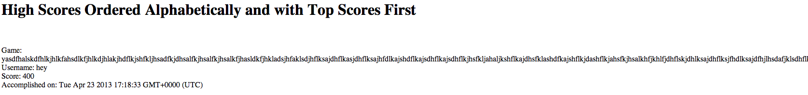

Scorecenter is a webapp designed to provide game programmers with a simple and efficient API for sending and receiving highscores. The app allows for a particular game's top ten scores to be sent in JSON form via AJAX to the client, and provides a mechanism for searching for a single user's high scores as well. The app is implemented in Node.js using the Express web framework with MongoDB for data storage.
We've been sent to ensure the security and reliability of the application is as strong as it is advertised. The app promises very useful functionality for game programmers who do not have the capabilities or resources to implement such a system. Before it is deployed to the masses, however, ensuring that it is attacker-proof and reliable is a must so that users may get the best experience possible out of this app.
To test scorecenter, a copy of the application was downloaded and run in a local environment in order to protect the live version from our attacks.
Several tests were run to detect vulnerabilites on the server. The Java app Paros was used as a proxy in order to execute Cross Site Scripting attacks and test script injection capabilities. Javascript scripts were written on a separate site on the same host in order to simulate the server's handling of large traffic environments. Finally, the source code was reviewed by hand in order to discover further hidden security flaws. After review, the attack scripts and injections were modified to test whether the flaw truly existed as it was observed.
In numerous locations, the application executes code based on input written directly by the user. The code, at no point, checks to ensure that the user input is safe and non-malicious. Consequently, there are numerous opportunities for attackers to inject scripts to gain access to and manipulate private data. In addition, several holes exist for attackers to write scripts that can cause malicious behavior for clients, such as redirecting them to dangerous sites or destroying site code. Finally, the website, in its present state, accepts CORS requests from all machines on the Internet, which is a very dangerous state for a server.
The application contains little to no code to help deal with increases in traffic. If a very popular online game decides to use this API, the server may have trouble properly fulfilling all the requests being sent by clients. This mismanagement of traffic also makes the application quite susceptible to denial-of-service attacks, and a malicious script could easily overwhelm the application by using up bandwidth. Memory and processing power are also susceptible to attacks, since the application does not keep track of who access the server and thus cannot protect itself accordingly from malicious attackers attempting to overwhelm the system. Finally, the server does not properly manage TCP connections for all requests and, consequently, users may face broken behavior when using programs that need to interface with the API multiple times per session.
The application contains several minor bugs that do not necessarily compromise data integrity but may lead to broken behavior for clients. For example, unlimited input buffers can lead to broken stylesheets if input strings are too long. In addition, the database itself offers no privacy for clients, making all data for every game on the site available to the world. While this is partly a design decision, an alternative, private offering may be desirable for clients who wish to protect their data.
Cross Origin Resource Sharing is presently set to allow requests from any machine, as is evident from the following code contained in web.js:
Consequently, any client (or bot) is able to submit requests to the website, which may contain malicious scripts. Combined with the numerous other security flaws of the website, this hole allows for almost zero protection against attacks and leaves the app extremely compromised.
Limit CORS to whitelisted domains. In order to allow for several users to still use the product, construct a registration form such that users may sign up to be allowed access, but the owner has a list of all active users. The following is an example of how CORS could be implemented for such a whitelist:
The registration form should also employ a CAPTCHA or similar test in order to prohibit bots from registering with the site to perform attacks.
No channels on the website employ any form of input sanitization. This creates a hole for an XSS attack through script injection. For example, we were able to change the background of the homepage to a red color and cause an alert box to pop-up for all users visiting the site by injecting Javascript code into a request payload:
Additionally, one could use this hole to execute database commands, which could allow them access to private data or allow them to execute malicious code and damage the database.
Sanitize inputs. Replace all dangerous characters (e.g., < , ") in strings with safe equivalent HTML entities before submitting any forms or inserting any data into the database. A simple example of a function that sanitizes strings using regular expressions is available here (of course, the sanitization should take place on the server side and not the client side - sanitized inputs on the client side offer nothing for protection against an XSS attack).
The server, in its present state, accepts and processes packets just as they arrive. If a very popular game begins to send many requests very quickly to the app, it could become overwhelmed and crash due to overload. In addition, this also theoretically leaves the app susceptible to DDoS attacks. While we do not have the resources to carry out a full simulation of a DDoS attack, web.js does not contain any code for handling overwhelming bursts of traffic and is thus susceptible to problems when faced with this situation.
Employ a queuing system such that, if packets begin to arrive very rapidly, the machine is able to handle them in an orderly fashion. For extra security, if packets arrive at a rate too high for the machine to process, a choke filter could be employed to begin dropping packets after exceeding a server-defined threshold, which could also help to inhibit DDoS attacks.
The application accepts and processes any incoming requests, no matter their origin. Consequently, if one particularly malicious user repeatedly attacks the app, there is no way to identify them, or even verify that the header contains valid information to prove that it comes from a reliable source. With this vulnerability, we were able to execute an attack from an external site that flooded the database with thousands of meaningless records:
The excessive packets used up extensive amounts of memory and processing power on the server and would pose problems for a live website.
This problem is similar to #3, but requires additional care. The solution to #3 handles excessive amounts of traffic, but, when capable, responds to all packets under the assumption that they are legitimate. The following solution provides protection against the case when a flood of requests are being sent to the server by a malicious user:
Employ a system to track IP origins of packets. The system should detect if one particular host sends too many packets within a certain amount of time and temporarily block the address until the storm ends. One could employ a blacklist as well to manually block certain IP addresses as designated by the site owner, but this is largely a futile effort, as it is easily counterracted by IP spoofing.
The app does not acknowledge any packets sent via POST. Many operating systems limit the number of TCP connections able to be open at a time, and thus if several people submit POST requests to the app and do not end their sessions, the server will begin to drop any incoming packets due to the TCP stream limit; the response is required to end the session properly, and if it is not sent the session continues indefinitely until the client closes their window, thus preventing other users from sending requests to the server in the future.
Send response packet in all app.post events (does not have to contain any data, can have empty payload; only needed to function as ACK signal). This is a very simple addition:
The application does not limit any inputs to a specified amount of characters. While this does not pose much of a risk to the actual data stored in the database, it could be used for disruptive purposes. For example, a user could give themselves an extremely long name, which would stretch pages and potentially break the CSS of a site that used the application. In addition, a malicious user could write a script to fill the database with junk data that wastes space. We were able to send input with a game_title over several thousand characters long:
(the above game_title continues for several thousand more characters to the right)
Limit input buffers on server end (client side input limits may be easily overridden). Whenever input is received from user:
To read data for a game, one only needs to send a GET request to http://localhost/highscores.json?game_title=*desired game*; no authentication is required. One could potentially see this as a feature, as it could allow for people to build "Game Center"-esque apps that utilize high scores from a variety of games; others may view it as a privacy violation of their data. Since high scores are generally not considered particularly sensitive pieces of data, this does not pose a huge risk, but is something to consider based on how clients may wish to have their data exposed.
If demanded by userbase, provide the option for private and public data sets. Users could register a specific game title as protected, and the data could be encrypted and only unlocked by a generated key provided to the client.
As it stands, scorecenter is unfit to be deployed on the Internet for widespread use. Several vulnerabilities make it dangerous for clients to implement the API, especially since the data for their own applications will be manipulated on the scorecenter server. The data would not be safe, and there are numerous opportunities for hackers to compromise the games clients choose to use with this API. Luckily, the changes do not require any major overhaul of the design that has already been made: rather, they are mostly just additions to the code that already follow many protocols that have already been designed and implemented on many other sites (string sanitization, whitelisted CORS implementation, etc.); thus, the fixes should not be too complex, time-consuming, or expensive.